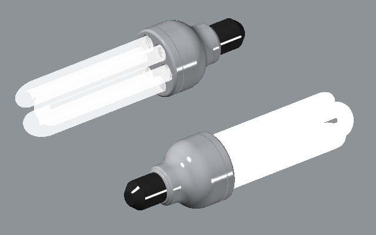
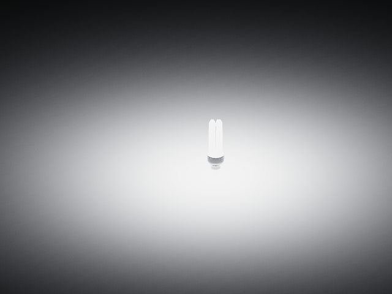
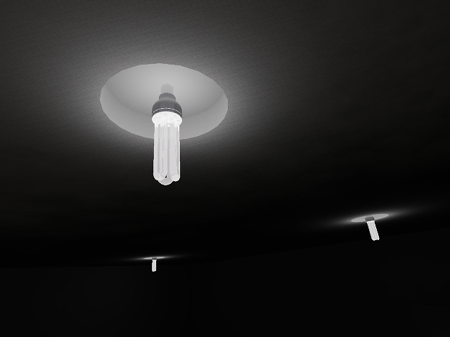
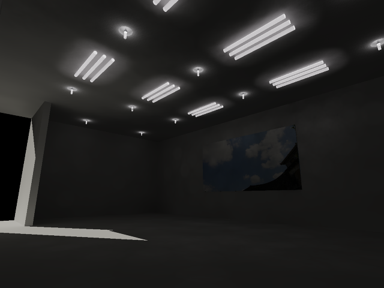
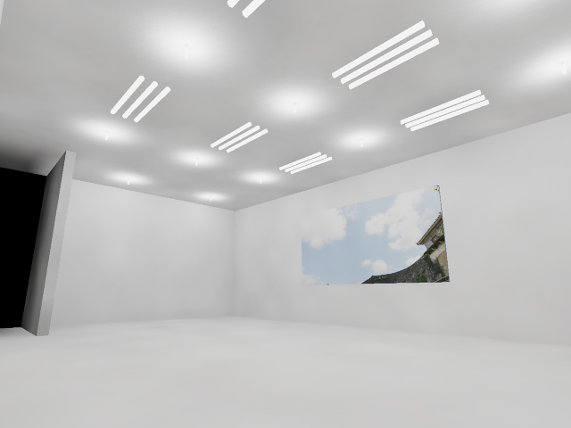
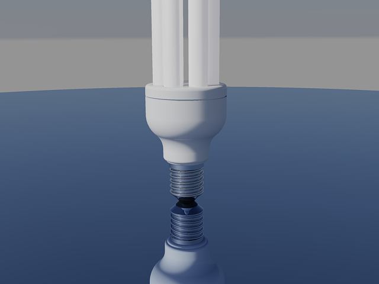

一直想做這個「省電燈泡」的範例，最近終於有點空閒製作範例，在這分享及建模、貼材質及燈光步驟，歡迎大家一起來試試～
其中關於發光功率：57 流明/瓦特、6500K 晝光色 是參考 非X浦的省電燈泡喔～



請記得說明以下事項(參與練習的朋友將獲得 積分+1及威望值+6 ):
1.3D成品圖片
2.建模所用到的指令(約略說明即可)
3.使用的AutoCAD版本
4.建模所需時間
5.您的意見補充
省電燈泡 3D範例影片：
省電燈泡 燈光材質範例影片：
2012.08.29補充：
1.補上螺紋，及使用「簡報」等級，每張彩現時間約1～2分鐘。
2.調整描影彩現的物件之平滑度，將FACETRES系統變數 設定為2。
3.輸入RPREF指令開啟「進階彩現設定」，將「取樣」欄位 →「篩選類型」→ 改為「藍佐斯」。




DWG範例檔下載：